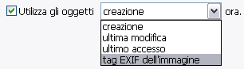
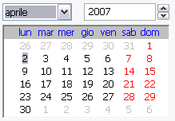
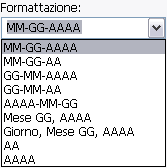
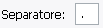
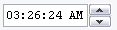
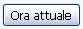
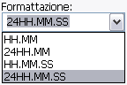

Potrai avere le informazioni di data e ora dagli oggetti invece di settarne di propri.
TUTTE le formattazioni funzionaranno.
Note: nei filesystems POSIX (Linux, OS X, BSD, etc), non c'é la data di creazione, siccome non esiste in questi sistemi.
Invece potrai vedere Modifica Metadata (ctime) che è l'ora dell'ultima modifica (Ma non necessariamente -
i.e. cambiare i permessi cambierà i metadata, ma non modifichera l'ora)

Usa il Calendario per specificare la tua data (il default è la data attuale).

Queste sono tutte le formattazioni predefinite. In ogni caso potrai usare un
tuo personale formato, semplicemente inserendo il testo nella casella di testo.

Usa il Separatore per specificare come separare i diversi elementi della data quando usi i formati inclusi.

Il riquadro dell'Ora mostra di default l'ora in cui l'applicazione è stata aperta, ma tu puoi cambiarlo
evidenziando un settore e usando le freccie su e giù.

Il pulsante ora attuale setta l'ora all'ora attuale.

Queste sono tutte le formattazioni predefinite. In ogni caso potrai anche usare un
tuo personale formato, semplicemente inserendo il testo nella casella di testo.
Usa il Separatore per specificare come separare i diversi elementi dell'ora quando usi i formati inclusi.